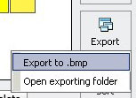

|
Save or export palette |
|  |
The File button indicates all procedure of what you want to do with your palette file. If you didn't save your palette, Color Bee will remind you ask you again before you close the application. You can export your palette to a Bitmap either the palette file is saved or not. By default, an exported palette Bitmap will be stored into the folder named ExportPalette which is in the same folder where Color Bee is instaed on your computer. A folder borwser window will open after you have exported your palette successfully. |